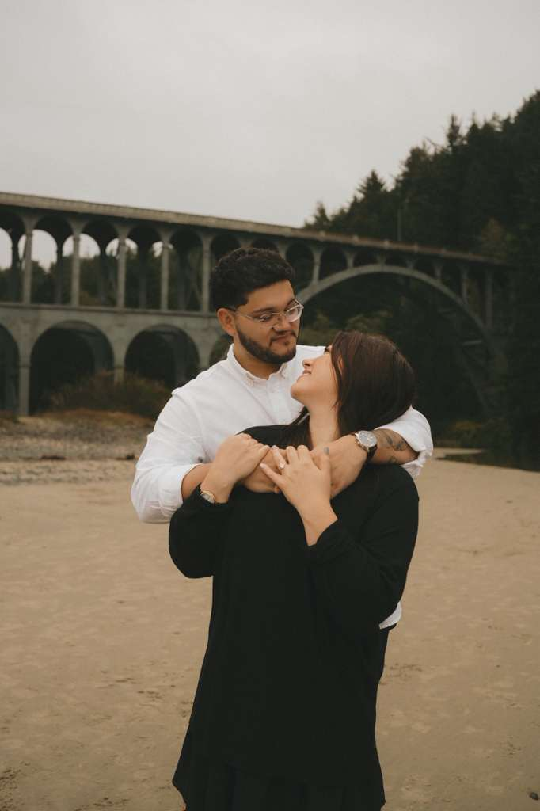
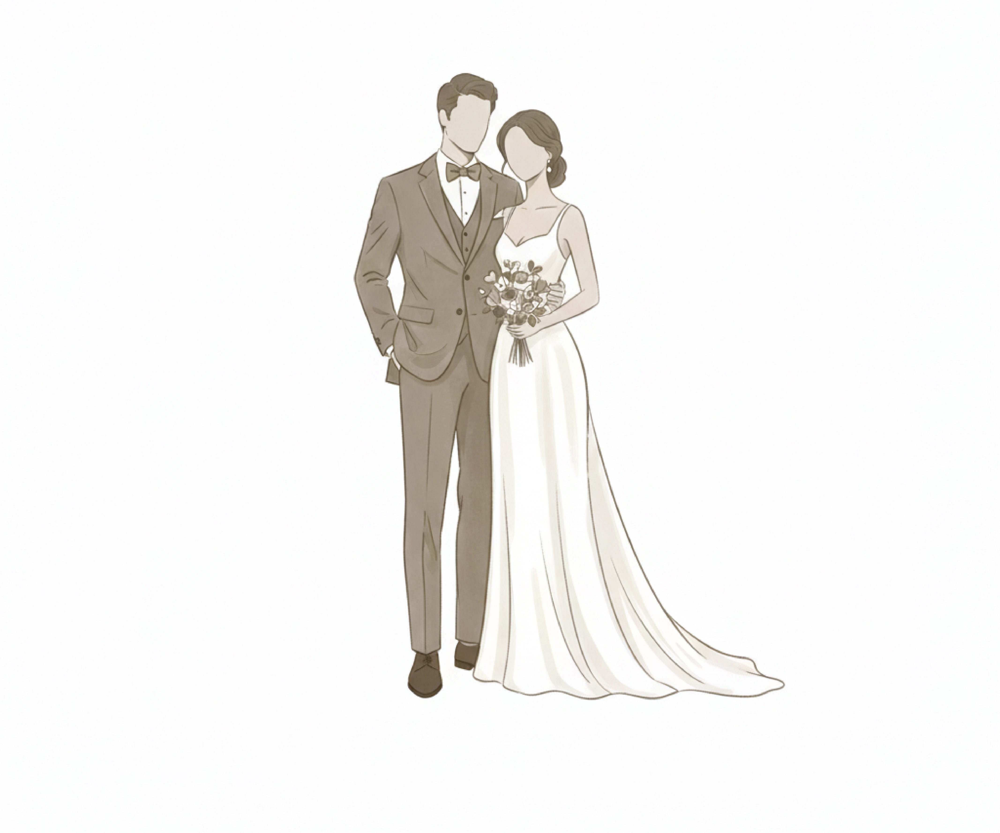

February 14
El Salvador, Cardedeu

Our Story
While Mario was living in Nashville, Tennessee, I was there on a bachelorette
trip for one of my best friends. It was the night of June 2nd. After visiting a
couple of places to celebrate, we ended up at Whiskey Row, yes, we met in a bar!.
We made eye contact, but Mario and I were to shy to speak with each other.
The bride to be pulled Mario into our circle and there he was, standing in
front of me. In the early morning of June 3rd, he introduced himself
(in the most formal way), and we danced.
We then went to Morgan Wallen’s bar with both our groups of friends and danced
nonstop. We ended up talking all night. Mario randomly shared his entire life
with me, and I did the same. We both felt the same way — like we had met our
other half. I had a flight that day back to Oregon. Before saying goodbye,
he told me I would be his wife. I laughed and called him crazy —
it was crazy to hear that from someone I had just met.
But here we are, inviting you to our wedding. He was right. lol
Wedding Date Countdown
- days
- Hours
- Minutes
- Seconds
Let's get the party started
Schedule
Travel and Accommodations
Dress Code
Formal Attire
Our Proposal
FAQ
Is there parking at the venue if I rent a car or have a car? /
¿Hay estacionamiento en el lugar si alquilo un coche o tengo coche?
+
Yes / Si
Is the ceremony and reception at the same location? / Es el mismo lugar la reservación del evento y ceremonia
+
Yes / Si
Will the event be indoors, outdoors, or both?
+
Ceremony will take place indoors at the church Templo Santisima Trinidad and reception will be outdoors with a small indoor area to lounge in.
What kind of meal will be served?
+
Both steak and chicken with potatoes and vegtables, as well as appetizers and late night snacks.